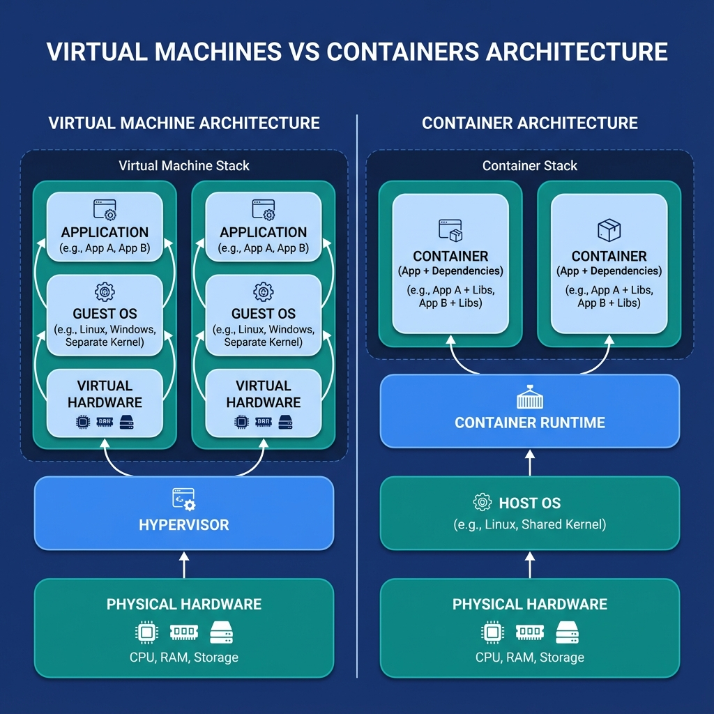
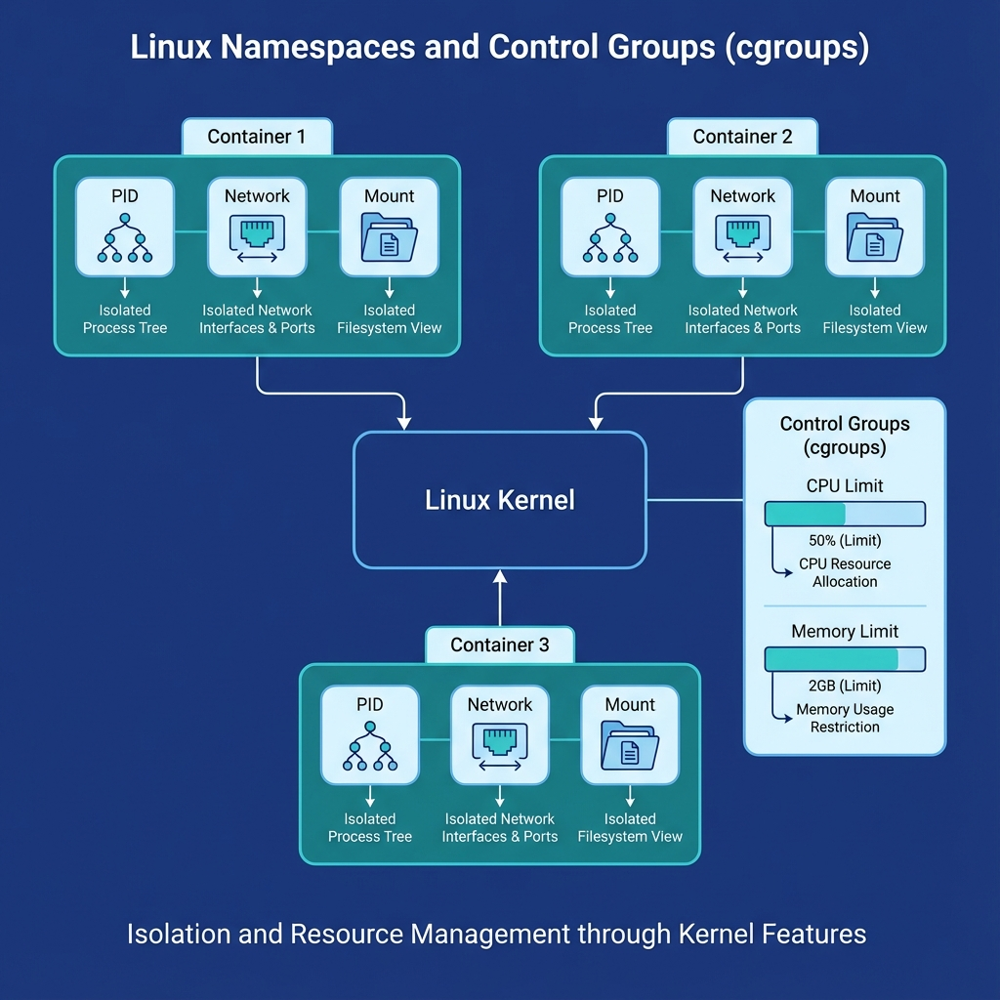
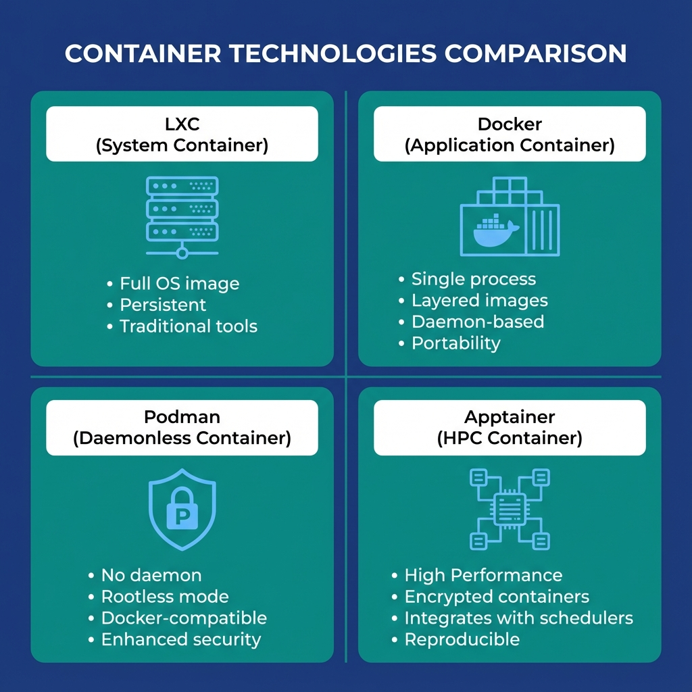
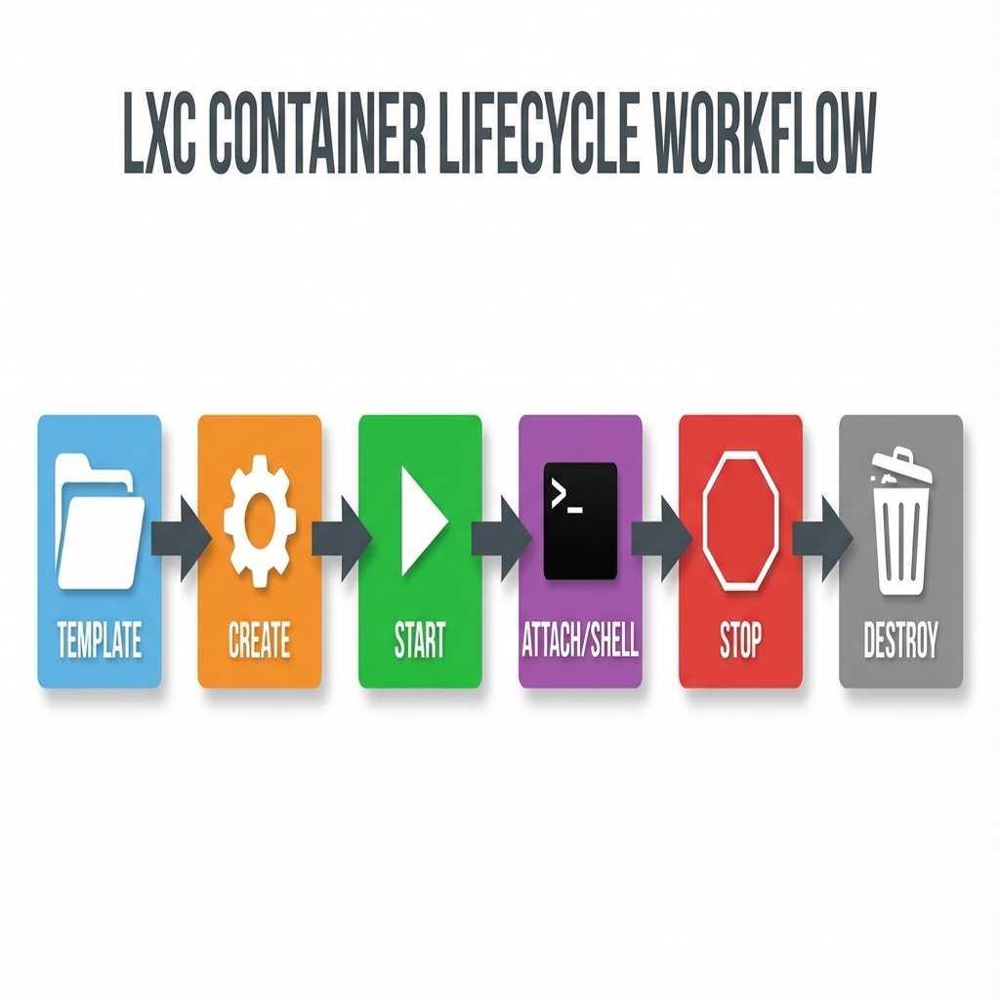
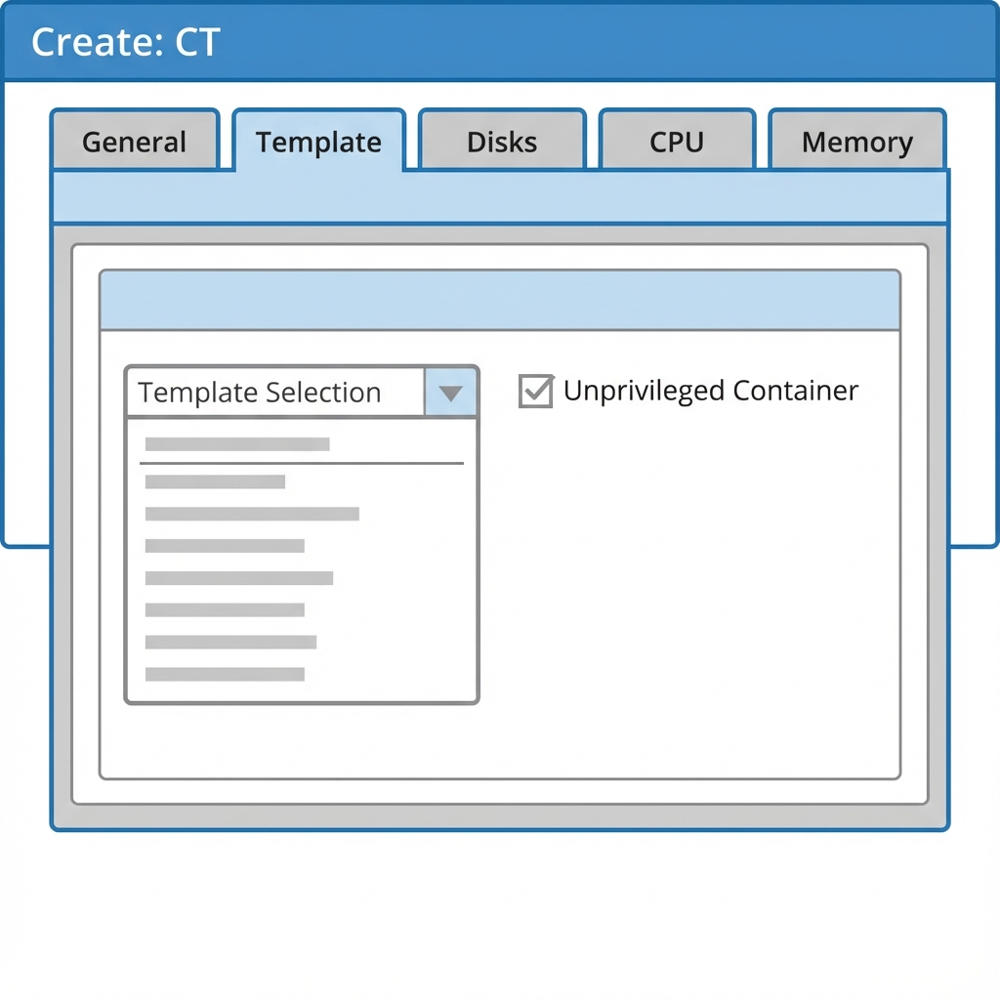
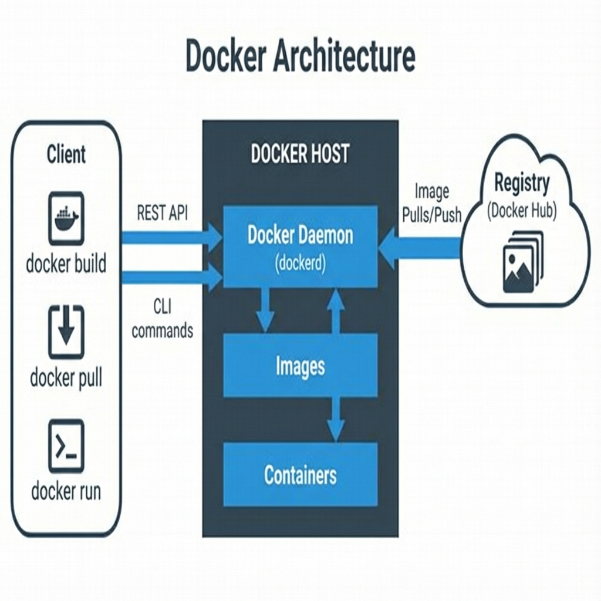
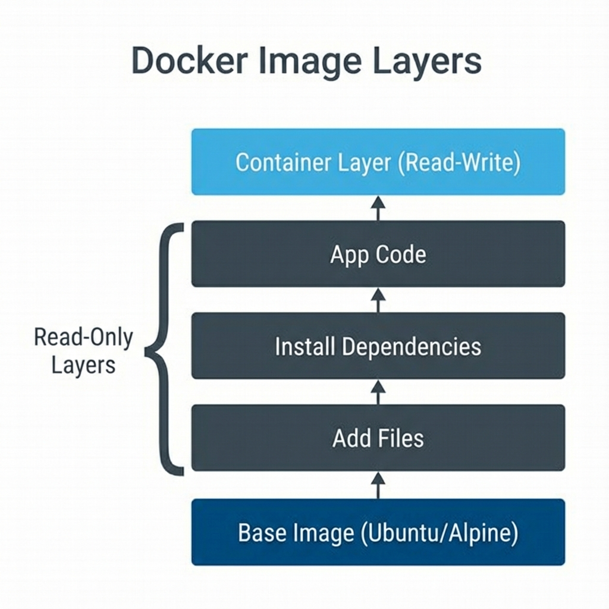
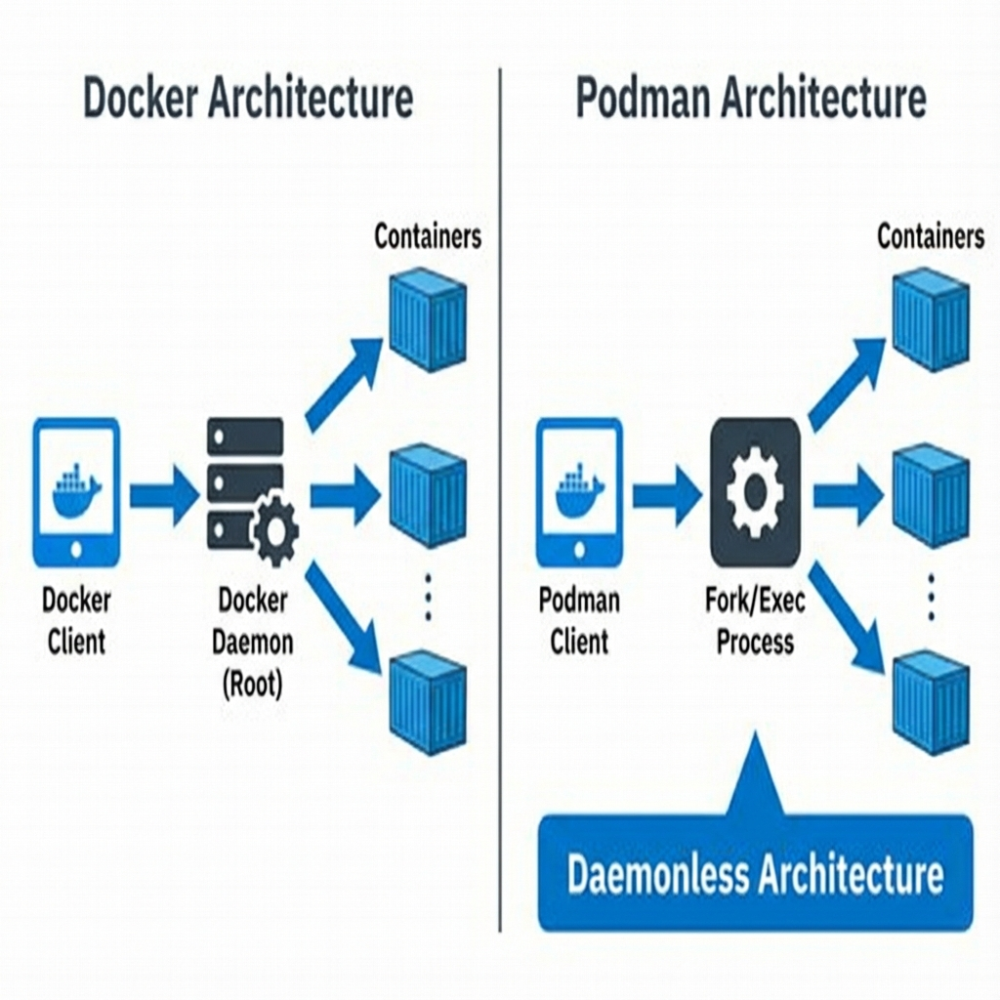

Containers and Resource Management
Student NotesCourse: Computer Systems Engineering Module: Operating Systems 3 (Virtualisation & Cloud Technologies) Topic: Containers and Resource Management Estimated Reading Time: 35 Minutes
[!TIP] How to succeed in this week: Containers are NOT lightweight VMs—they're a different paradigm. Focus on understanding namespaces and cgroups. The orchestration section (Kubernetes) builds on everything you've learned so far.
Welcome to Week 5!
This week represents a significant shift in our exploration of virtualization technology. While the previous weeks focused on virtual machines that virtualize complete hardware stacks, this week introduces containers, a fundamentally different approach to virtualization that operates at the operating system level. Understanding containers is no longer optional for IT professionals. Container technology has become pervasive across cloud computing, application development, and modern infrastructure management. Major technology companies deploy millions of containers daily, and cloud platforms like OpenStack integrate container services as core offerings.
The conceptual leap from virtual machines to containers requires adjusting your mental model of what virtualization means. Virtual machines create the illusion of complete computers with virtual hardware, allowing each VM to run its own operating system kernel. Containers create the illusion of separate systems while sharing the host operating system's kernel. This distinction, while seemingly subtle, has profound implications for performance, resource utilization, deployment speed, and appropriate use cases. By the end of this week, you will not only understand these differences conceptually but also have hands-on experience creating and managing containers in Proxmox VE using LXC, and familiarity with Docker and Podman, the dominant container technologies in cloud environments.
What You'll Learn This Week
- Articulate the architectural differences between containers and virtual machines
- Explain the roles of Namespaces and Control Groups (cgroups) in Linux
- Compare different container technologies: LXC, Docker, Podman, and Apptainer
- Master the command-line workflows for standard LXC and Docker
- Deploy and manage LXC containers using the Proxmox VE GUI
1. The Container Paradigm
To truly grasp how containers differ from virtual machines, we must examine what happens at the kernel level during creation and operation. When you boot a virtual machine on Proxmox VE, a complex sequence occurs. The hypervisor creates a virtualized hardware environment including virtual CPU, memory, storage controllers, and network adapters. The VM's virtual BIOS initializes, the bootloader loads from the virtual disk, and the kernel initializes. From the kernel's perspective, it is running on a physical computer with exclusive control of hardware resources.
Containers operate on entirely different principles. When you create a container, no new kernel boots. The Proxmox host's kernel—which is itself a Linux kernel—remains the only kernel running. What changes is that the kernel creates isolation boundaries using features built into Linux itself. These features, primarily namespaces and control groups, allow the kernel to present different views of system resources to different groups of processes.
 Figure 1: VMs vs Containers Architecture - VMs include full guest OS with separate kernel; containers share the host kernel with isolation via namespaces
1.1. The Foundation: Namespaces and Control Groups
Linux namespaces provide the fundamental isolation mechanism enabling containers. Each namespace type isolates a different aspect of the system. The PID (Process ID) Namespace isolates the process tree. On a normal Linux system, all processes share a single process ID space. With PID namespaces, each namespace has its own isolated process tree. The container's init process appears as PID 1 from the container's perspective, even if it is PID 2450 on the host. This prevents processes inside the container from seeing or signaling processes on the host.
The Network Namespace isolates network configuration completely. Each network namespace has its own network interfaces, IP addresses, routing tables, and firewall rules. This enables functionality that would otherwise conflict, such as multiple containers binding to port 80 on the same physical host. The Mount Namespace controls filesystem visibility, giving each container its own root filesystem (rootfs) that appears as the top of the directory tree.
While namespaces provide isolation, they do not inherently limit resource consumption. Without additional mechanisms, a process in a container could consume all available CPU time or memory. Control Groups (cgroups) solve this problem by providing resource limiting, accounting, and prioritization. Understanding cgroups is essential because they form the foundation of resource management in all modern container platforms, from Docker to Kubernetes.
1.2. Understanding Control Groups in Depth
Control Groups, commonly abbreviated as cgroups, are a Linux kernel feature that organizes processes into hierarchical groups and applies resource constraints to those groups. Think of cgroups as the traffic police of the Linux system: while namespaces create separate lanes of traffic (isolation), cgroups enforce speed limits and allocate road capacity (resource limits).
When you create a container and specify that it can use "2 CPU cores" and "1GB of RAM," these limits are enforced through cgroups. The container runtime creates a cgroup for that container and configures the appropriate resource controllers. If the containerized application tries to exceed these limits, the kernel's cgroup subsystem intervenes to enforce the constraints.
1.3. The cgroup Hierarchy
Cgroups are organized in a tree-like hierarchy, similar to how processes form a process tree. Each cgroup can have child cgroups, and resource limits applied to a parent cgroup affect all its children. This hierarchical structure enables sophisticated resource allocation strategies. For example, you might create a parent cgroup allocating 50% of CPU to "production workloads" and 50% to "development workloads," then subdivide those allocations further among individual containers.
1.4. cgroup Controllers (Subsystems)
The power of cgroups comes from specialized controllers (also called subsystems), each responsible for managing a specific type of resource. The most critical controllers for container management include:
1.4.1. CPU Controller
This controller regulates access to CPU time. Administrators can use several mechanisms to control CPU allocation: - CPU Shares: A proportional weight system where containers with higher shares get more CPU time when there's contention. For example, if Container A has 1024 shares and Container B has 512 shares, Container A receives twice as much CPU time during periods of high demand. - CPU Quota: An absolute hard limit on CPU usage over a period. Setting a quota of 50000 microseconds per 100000 microsecond period limits the container to 50% of one CPU core. - CPU Sets: Pins containers to specific CPU cores, which is useful for performance-sensitive applications that benefit from CPU cache locality.
1.4.2. Memory Controller
This controller manages memory allocation and prevents containers from consuming excessive RAM: - Memory Limit: Sets a hard cap on the amount of RAM a cgroup can use. When this limit is reached, the kernel may trigger the Out-Of-Memory (OOM) killer to terminate processes within the cgroup. - Memory Reservation: A soft limit that acts as a target. The kernel will attempt to reclaim memory from the cgroup when system-wide memory pressure occurs. - Swap Control: Determines whether the cgroup can use swap space and how much.
1.4.3. Block I/O Controller (blkio)
This controller limits disk read/write operations: - I/O Weight: Similar to CPU shares, assigns proportional I/O bandwidth. - Throttling: Sets absolute limits on read/write operations per second (IOPS) or bytes per second.
1.4.4. Network Controller
While technically separate from the primary cgroup implementation, network bandwidth can also be controlled through Traffic Control (tc) in conjunction with cgroups, allowing administrators to limit network throughput per container.
1.4.5. PID Controller
Limits the number of processes (PIDs) that can be created within a cgroup, preventing fork bombs and runaway process creation.
1.5. Practical cgroup Management
On modern Linux systems, cgroups are typically managed through the systemd init system, which uses cgroups extensively for service management. However, understanding direct cgroup manipulation is valuable for troubleshooting and advanced container configurations.
The cgroup filesystem is typically mounted at /sys/fs/cgroup/. Each controller has its own subdirectory, and creating a new cgroup is as simple as creating a directory within that hierarchy.
1.5.1. Example: Creating and Configuring a cgroup
# View the cgroup hierarchy (cgroups v2)
ls /sys/fs/cgroup/
# Create a new cgroup called "limited_container"
sudo mkdir /sys/fs/cgroup/limited_container
# Set memory limit to 512MB
echo "536870912" | sudo tee /sys/fs/cgroup/limited_container/memory.max
# Set CPU quota to 50% of one core (50000 microseconds per 100000 microsecond period)
echo "50000 100000" | sudo tee /sys/fs/cgroup/limited_container/cpu.max
# Add the current shell to this cgroup to test
echo $ | sudo tee /sys/fs/cgroup/limited_container/cgroup.procs
# Any process started from this shell now inherits the resource limits
1.5.2. Monitoring cgroup Resource Usage
# View current memory usage of a cgroup
cat /sys/fs/cgroup/limited_container/memory.current
# View CPU usage statistics
cat /sys/fs/cgroup/limited_container/cpu.stat
1.6. cgroups v1 vs v2
The Linux kernel has two major versions of the cgroup implementation. cgroups v1 (the original implementation) allowed each controller to operate independently with separate hierarchies. cgroups v2 (the modern unified hierarchy) consolidates all controllers into a single tree structure, simplifying management and improving consistency.
Most modern Linux distributions (such as Ubuntu 22.04+ and Debian 11+) have transitioned to cgroups v2 by default. Docker and other container runtimes now support both versions, though v2 offers improved performance and a cleaner API.
1.7. How Container Runtimes Use cgroups
When you run a container with resource limits, the container runtime (Docker, containerd, Podman, or LXC) performs these operations behind the scenes:
- Create a cgroup: The runtime creates a new cgroup under its management hierarchy (e.g.,
/sys/fs/cgroup/system.slice/docker-<container-id>.scope/). - Set limits: Resource constraints specified in the container configuration are written to the appropriate controller files.
- Add processes: The container's main process (and all its children) are added to the cgroup by writing their PIDs to
cgroup.procs. - Monitor: The runtime periodically reads resource usage from the cgroup to provide statistics visible through commands like
docker stats.
1.8. Example: Docker and cgroups
When you run the following Docker command:
docker run -d --name web --cpus="1.5" --memory="512m" nginx
Docker creates a cgroup and configures it approximately like this:
# Memory limit set to 512MB
echo "536870912" > /sys/fs/cgroup/system.slice/docker-<ID>.scope/memory.max
# CPU quota set to 150% (1.5 cores)
echo "150000 100000" > /sys/fs/cgroup/system.slice/docker-<ID>.scope/cpu.max
You can inspect these settings directly:
# Find the container ID
CONTAINER_ID=$(docker inspect web --format='{{.Id}}')
# View the actual cgroup path
docker inspect web --format='{{.HostConfig.CgroupParent}}'
# Check memory limit (on systems with cgroups v2)
cat /sys/fs/cgroup/system.slice/docker-${CONTAINER_ID}.scope/memory.max
 Figure 2: Linux Namespaces and Cgroups - Namespaces provide isolation (PID, Network, Mount) while cgroups enforce resource limits (CPU, Memory)
1.9. Section 1 Checkpoint
Summary: Namespaces: Provide isolation (Network, PID, Mount). The "Walls". Control Groups (cgroups): Provide resource limiting (CPU, RAM). The "Police". Containers share the Hot Kernel; VMs use their own Kernel.
Reflection: If a container crashes the kernel, does the host crash? Why can't you run a Windows Container on a Linux Host (natively)?
Resources: Red Hat: What are Linux Namespaces?
2. The Container Technologies Landscape
The term "container" is often used broadly, but in practice, distinct technologies utilize these kernel features for different purposes. It is vital to distinguish between System Containers, which act like virtual machines, and Application Containers, which package individual applications.
2.1. LXC (Linux Containers)
LXC provides System Containers. The philosophy behind LXC is to offer a lightweight virtual machine experience without the overhead of hardware emulation. An LXC container boots a full init system (like systemd), runs multiple services (SSH, Cron, Syslog), and persists data like a traditional server. It is ideal for infrastructure consolidation where you require long-running servers but want the density and efficiency of containers.
2.2. Docker
Docker popularized Application Containers. Unlike LXC, Docker allows you to package an application and its dependencies into a single runnable unit. A Docker container typically runs a single process (such as Nginx or Python) and is ephemeral in nature. Data is stored in external volumes, and the container itself can be destroyed and recreated easily. Docker is the standard for microservices and modern software delivery.
2.3. Podman
Podman is a modern alternative to Docker, developed by Red Hat. It maintains compatibility with Docker's commands and image format (OCI) but differs significantly in architecture. Podman is daemonless; it does not require a background service running as root. Instead, it starts containers directly as child processes of the user. This architecture enhances security and natively supports "rootless" containers, allowing unprivileged users to run containers safely.
2.4. Apptainer (formerly Singularity)
Apptainer is designed specifically for High Performance Computing (HPC) and research environments. In these environments, users run jobs on shared clusters where they do not have root access. Apptainer accommodates this by encapsulating the entire environment into a single file (.sif) and running it with the user's existing privileges. It prioritizes mobility of compute and integration with batch schedulers like Slurm.
2.5. Comparison Table
 Figure 3: Container Technologies Landscape - LXC for system containers, Docker for application containers, Podman for secure daemonless containers, Apptainer for HPC workloads
| Feature | LXC | Docker | Podman | Apptainer |
|---|---|---|---|---|
| Type | System Container | Application Container | Application Container | Compute Container |
| Philosophy | "Lightweight VM" | "Single Service" | "Single Service" | "Portable Application" |
| Management | lxc-* commands |
docker CLI |
podman CLI |
apptainer CLI |
| Daemon | None (Process based) | Yes (dockerd) | No (Fork/Exec) | No |
| Network | System IP (Bridge) | Port Mapping | Port Mapping | Host Network (typ.) |
| Root Access | Required for setup | Required (Daemon) | No (Rootless) | No (Rootless) |
| Image Format | System Templates | OCI Layers | OCI Layers | Single File (.sif) |
| Primary Use | Infrastructure / VPS | Microservices | Secure Microservices | Scientific / Research |
2.6. Section 2 Checkpoint
Summary:
- LXC: System Containers (OS-like, persistent). Used for VPS/Infrastructure.
- Docker: Application Containers (Single process, ephemeral). Used for Dev/Microservices.
- Podman: Daemonless, secure alternative to Docker.
Reflection:
- Why is "Daemonless" considered a security feature?
- Which technology would you use to host a permanent MySQL server: LXC or Docker?
Resources:
3. Working with System Containers (LXC CLI)
Before utilizing the graphical interface of Proxmox VE, it is important to understand the underlying mechanics of LXC using standard command-line tools. This knowledge is applicable to any Linux system running LXC.
3.1. Creating a Container
In the Docker ecosystem, users typically "pull" an image from a registry. In the LXC ecosystem, the process involves "creating" a container from a template. A template is a script or tarball that constructs the root filesystem for a specific Linux distribution. The lxc-create command handles this process, downloading the necessary files to a directory on the host (typically /var/lib/lxc).
 Figure 4: LXC Container Lifecycle - From template download through creation, start, attach, stop, to destroy
# Syntax: lxc-create -n <name> -t <template_script>
sudo lxc-create -n my-web-server -t download -- --dist ubuntu --release jammy --arch amd64
3.2. Listing and Monitoring
To view the status of containers, the lxc-ls command is used. The --fancy flag provides a formatted table showing the state (RUNNING or STOPPED), IP addresses (if running), and autostart configuration.
sudo lxc-ls --fancy
3.3. Starting a Container
Booting an LXC container is significantly faster than booting a virtual machine because there is no kernel initialization. The lxc-start command simply initiates the init system within the isolated namespace environment.
sudo lxc-start -n my-web-server
3.4. Accessing the Container
While it is possible to configure SSH for an LXC container, administrators often use lxc-attach to enter the container's namespace directly from the host. This works similarly to jumping into a chroot environment but respects the namespace boundaries. Once attached, you are the root user inside the container and can manage packages and services normally.
# Attach to the running process space
sudo lxc-attach -n my-web-server
# Example operations inside the container
root@my-web-server:~# apt update
root@my-web-server:~# apt install apache2
3.5. Stopping and Destroying
Containers should be stopped gracefully to allow services to terminate correctly. The lxc-stop command sends the appropriate signals. When a container is no longer needed, lxc-destroy removes its configuration and deletes the root filesystem directory.
sudo lxc-stop -n my-web-server
sudo lxc-destroy -n my-web-server
3.6. Section 3 Checkpoint
Summary:
- Create: Builds a rootfs from a Template (
lxc-create). - Start: Boots the init system inside the namespace (
lxc-start). - Attach: Enters the namespace directly (
lxc-attach).
Reflection:
- How does
lxc-attachdiffer from SSH? - Where are the container filesystems actually stored on the host?
Resources:
4. LXC in Proxmox VE (GUI Workflow)
Proxmox VE integrates LXC natively, wrapping the underlying LXC technologies in a sophisticated management interface. This abstracts the complexity of command-line management while providing powerful features like backup, replication, and high availability.
 Figure 8: Proxmox VE Container Management - GUI workflow from template download to container creation with dynamic resource management
4.1. Step 1: Downloading Templates
Before a container can be created, a template must be available on the configured storage. In the Proxmox GUI, navigate to the storage view (such as local or local-lvm). The CT Templates section provides a built-in browser for downloading official templates for various distributions like Ubuntu, Debian, Alpine, and CentOS, as well as TurnKey Linux appliances which come pre-configured with software stacks.
4.2. Step 2: Creating a Container
The creation wizard guides you through the configuration. Important settings include the Hostname, which sets the container's internal identity, and the Unprivileged option. Unprivileged containers are the default and recommended choice; they use user namespaces to map the container's root user to a non-privileged user on the host, significantly reducing the impact of a potential container escape. During Disk and CPU/Memory configuration, you set the resource limits that cgroups will enforce.
4.3. Step 3: Managing Resources Dynamically
One of the key advantages of containers is the ability to adjust resources without rebooting. If a container is under memory pressure, you can navigate to the Resources tab in Proxmox and increase the Memory limit. The change is applied instantly to the running container's cgroup. This elasticity allows for highly efficient resource management compared to the static allocation often required for virtual machines.
4.4. Section 4 Checkpoint
Summary:
- Proxmox uses typical LXC tech but wraps it in a GUI for ease of use.
- Templates: Must be downloaded to storage before creation.
- Unprivileged: Maps root inside container to non-root outside for security.
Reflection:
- Why is "Unprivileged" the default?
- How does dynamic resource resizing work with cgroups?
Resources:
5. Working with Application Containers (Docker CLI)
Docker transformed how developers and operations teams approach application deployment. Before Docker, deploying applications required extensive documentation detailing all dependencies, library versions, and system configurations. Each deployment environment potentially differed, causing "works on my machine" problems. Docker containers package applications with all dependencies, creating standardized units that run consistently anywhere Docker runs.
5.1. Docker Architecture Components
The Docker platform comprises several interconnected components forming a complete ecosystem. Understanding this architecture clarifies how Docker operates. At the foundation, the Docker daemon (dockerd) runs as a persistent background service, managing Docker objects like images, containers, networks, and volumes. The Docker CLI (docker) provides the familiar command-line interface. When you run a command, it translates this into API calls to the daemon.
 Figure 5: Docker Architecture - Docker CLI communicates with Docker Daemon via REST API to manage images, containers, networks, and volumes
Docker Images serve as the templates from which containers instantiate. An image is a read-only layered filesystem containing everything needed to run an application: base OS files, application code, runtime environments, and system libraries. Registries are repositories that store and serve these images. Docker Hub is the public registry hosting millions of images, while organizations may operate private registries for proprietary applications.
5.2. Running a Container
Docker's most fundamental operation is docker run, which combines checking if the image exists locally, pulling it if missing, creating a container, and starting it.
# Syntax: docker run [options] <image> [command]
docker run -d --name web -p 8080:80 nginx
Breaking this command down: -d runs the container detached (in the background). --name web assigns a meaningful name, avoiding random identifiers. -p 8080:80 maps host port 8080 to container port 80, making the web server accessible at http://localhost:8080. The argument nginx specifies the image name; Docker pulls nginx:latest from Docker Hub by default.
5.3. Managing Container Lifecycle
Managing running containers involves a set of essential commands for inspection and control.
# List only running containers
docker ps
# List all containers including stopped ones
docker ps -a
# View container logs (stdout/stderr)
docker logs web
# Stop container gracefully
docker stop web
# Forcefully kill container
docker kill web
# Remove stopped container
docker rm web
5.4. Inspecting and Debugging
The docker exec command is particularly useful for troubleshooting. It allows you to execute commands inside a running container. The -it flags allocate an interactive pseudo-TTY, giving you a shell prompt inside the container to inspect processes or check configurations.
# Interactive shell in running container
docker exec -it web bash
Resource usage can be monitored using docker stats, which provides real-time information on CPU, memory, and network usage for running containers.
5.5. Building Custom Images with Dockerfiles
While pre-built images satisfy many needs, real applications require custom images. A Dockerfile is a text file containing instructions for building an image, where each instruction creates a new layer.
Consider a simple Python web application. A Dockerfile might look like this:
# Base image - using slim variant to reduce size
FROM python:3.11-slim
# Set working directory for subsequent instructions
WORKDIR /app
# Copy requirements file first (for caching efficiency)
COPY requirements.txt .
# Install dependencies
RUN pip install --no-cache-dir -r requirements.txt
# Copy the rest of the application code
COPY . .
# Create a non-root user for security
RUN useradd -m appuser
USER appuser
# Document that the app listens on port 5000
EXPOSE 5000
# Default command to run the application
CMD ["python", "app.py"]
Each instruction has a specific purpose. FROM establishes the base image. WORKDIR sets the working directory. The sequence of copying requirements.txt before the rest of the code leverages layer caching: if your application code changes but your dependencies do not, Docker reuses the layer where dependencies are installed, significantly speeding up rebuilds. USER switches to a non-privileged user, a critical security best practice. CMD defines the command that runs when the container starts.
 Figure 6: Dockerfile Image Layers - Each instruction creates a new layer; cached layers speed up rebuilds when only code changes
Building the image from this Dockerfile is done with the docker build command:
docker build -t myapp:1.0 .
This reads the Dockerfile in the current directory (.) and builds an image tagged as myapp:1.0.
5.6. Section 5 Checkpoint
Summary:
- Images: Read-only layers containing the app.
- Containers: Runnable instances of images.
- Dockerfile: Recipe for building images.
Reflection:
- Why do we put the dependencies copy/install step before copying the app code in a Dockerfile?
- What happens to data inside a Docker container when you delete it?
Resources:
6. Working with Podman (Daemonless CLI)
Podman is a drop-in replacement for Docker in most scenarios, but its architecture is fundamentally different. Because it is daemonless, we do not need a background service.
 Figure 7: Podman vs Docker - Docker requires root daemon; Podman uses daemonless fork/exec approach for enhanced security
6.1. Running a Container (Rootless)
By default, Podman runs containers as the user who invoked the command, mapping the user's UID to root inside the container. This is a significant security advantage.
# Run a container just like Docker (commands are identical)
podman run -d --name rootless-web -p 8081:80 nginx
# List containers (These belong to YOUR user, not root)
podman ps
6.2. Pods
Podman allows you to manage "Pods" locally. A Pod is a group of containers that share the same network namespace (localhost), a concept directly compatible with Kubernetes.
# Create a Pod that exposes port 8888
podman pod create --name my-pod -p 8888:80
# Run a container INSIDE the Pod
# Note: We don't map ports here; the Pod holds the port mapping
podman run -d --pod my-pod --name member1 nginx
6.3. Section 6 Checkpoint
Summary:
- Daemonless: Podman runs as the user process, avoiding the "Root Daemon" risk.
- Rootless: Allows unprivileged users to run containers safely.
- Pods: Groups of containers sharing a network namespace (localhost).
Reflection:
- How can a rootless container bind to port 80 (privileged port)?
- Why is Podman considered "Kubernetes-friendly"?
Resources:
7. Future Preview: Kubernetes and kubectl
While Docker and Podman manage containers on a single host, modern cloud infrastructure requires managing containers across hundreds of hosts. This is the role of Kubernetes (K8s), the Container Orchestrator.
In this course, we will not install Kubernetes manually (the "Hard Way"). Instead, in Week 11, we will use OpenStack Magnum to deploy a production-ready Kubernetes cluster instantly. However, the tool you use to talk to that cluster—kubectl—is universal.
7.1. The Core Concepts (The K8s Dictionary)
Understanding K8s requires learning a new vocabulary, distinct from Docker's:
| Docker Concept | Kubernetes Concept | Description |
|---|---|---|
| Container | Pod | A Pod is the smallest unit. It usually contains one container (like Nginx), but can contain helpers ("Sidecars"). Pods share a network namespace (localhost). |
| Volme | Volume / PVC | Storage that persists beyond the Pod's lifecycle. |
| Network | Service | A stable IP address/DNS name that sits in front of dynamic Pods. If a Pod dies and is replaced, the Service IP stays the same. |
| Compose File | Manifest | A YAML file describing the "Desired State" (e.g., "I want 3 copies of Nginx"). |
7.2. The Control Loop (Desired State)
Kubernetes is Declarative. Unlike Docker, where you say "Run this container" (Imperative), in Kubernetes you say "I want 3 Nginx Pods" (Declarative). The Control Plane constantly checks: 1. What is the User's Desired State? (3 Pods) 2. What is the Actual State? (2 Pods running) 3. Action: Create 1 more Pod to match the desire.
7.3. The kubectl CLI
Start familiarizing yourself with these commands now. You will use them extensively in Week 11.
1. Creating Resources (Imperative)
# Docker equivalent: docker run -d --name nginx nginx
kubectl run nginx-pod --image=nginx --restart=Never
Command Analysis: *
run: Tells Kubernetes to create a single Pod. *--image=nginx: Uses the standard Nginx image from Docker Hub. *--restart=Never: Ensures this is treated as a simple Pod, not a managed service that automatically restarts.
2. Inspecting Resources
# List all Pods (Docker equivalent: docker ps)
kubectl get pods
# Get detailed info (logs, events, IP)
kubectl describe pod nginx-pod
Command Analysis: *
get: The universal command to list resources. You can use it forpods,nodes,services, etc. *describe: Shows the "Event Log" for a specific resource. If your Pod creation failed (e.g., "ImagePullBackOff"), this command tells you why.
3. Scaling Applications
# Create a Deployment (Manages Replicas)
kubectl create deployment web-app --image=nginx --replicas=3
# Scale it up manually
kubectl scale deployment web-app --replicas=10
Command Analysis: *
create deployment: Instead of a single Pod, we create a Controller that manages Pods. *--replicas=3: We tell K8s we want 3 identical copies. K8s will start 3 Pods immediately. *scale: Changing this number updates the "Desired State." Kubernetes effectively "forks" 7 more copies to reach 10.
4. Exposing to the World
# Create a Service to give the Pods a stable IP
kubectl expose deployment web-app --port=80 --type=NodePort
Command Analysis: *
expose: Creates a Service that fronts the Deployment. *--type=NodePort: Opens a specific port (e.g., 32000) on every node in the cluster. This allows external traffic to reach your internal Pods. *--port=80: The internal port the container is listening on.
7.4. Self-Correction Checklist
- Pod vs Container: A Pod wraps a container. K8s manages Pods, not containers directly.
- Service: Without a Service, you cannot reliably talk to a Pod because its IP changes every time it restarts.
- Magnum: We will use OpenStack Magnum to build the cluster, so we don't have to manage the Master Nodes ourselves.
8. Summary
This week you have bridged the gap between traditional virtualization and modern "Cloud Native" approaches. We have distinguished between Virtual Machines, which provide strong hardware-level isolation for complete operating systems, and LXC Containers, which provide lightweight efficiency for long-running Linux infrastructure. Additionally, we explored Application Containers (Docker/Podman), which provide ephemeral, portable packages for shipping software.
In enterprise environments, these technologies often coexist in a layered architecture: a physical cluster runs Proxmox VE; Proxmox hosts Virtual Machines and LXC containers; and inside those VMs, Docker runs the individual microservices. This "nesting" leverages the strengths of each technology: the management and security of virtualization with the agility of application containers.
9. Additional Resources
9.1. Video Tutorials
- LXC in Proxmox: YouTube (Compares to VMs, setup guide).
- Docker vs. Podman: YouTube (Explains differences, cloud use cases).
- Docker Basics: YouTube (Beginner guide to Docker containers).
9.2. Documentation & Further Reading
10. Lab Exercises
- Lab 1: System Containers (LXC)
- Goal: Introduction to System Containers on Proxmox.
- Lab 2: Docker Ecosystem & Orchestration
- Goal: Docker Fundamentals, Networking, Compose, and Portainer.
Test Your Knowledge
Ready to check your understanding of this week's material? Take the interactive quiz now!
Start Quiz